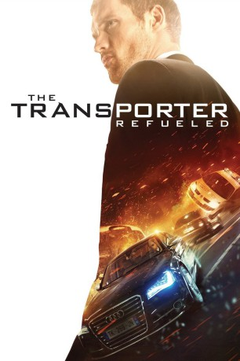
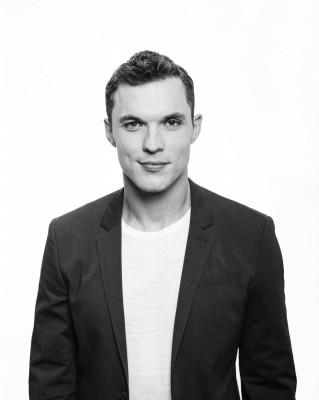
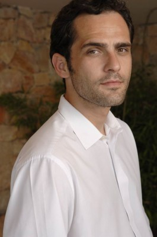
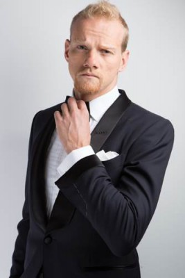

#2916 The Transporter Refueled
 gesehen am 02.01.2016
gesehen am 02.01.2016
 
 IMDB-Wertung: 5.2 / 10
IMDB-Wertung: 5.2 / 10  Metascore: 32
Metascore: 32 
Knallhart, zuverlässig und immer pünktlich: In der kriminellen Unterwelt von Frankreich ist Frank Martin (Ed Skrein) nur als der 'Transporter' bekannt, der beste Fahrer, den man für Geld kaufen kann. Wenn der Preis stimmt, bringt Frank alles an seinen Bestimmungsort, lässiger Kommentar inklusive. Dabei arbeitet er streng nach drei ganz einfachen Regeln: keine Namen, keine Fragen und keine Nachverhandlungen. Doch dann begegnet er der so geheimnisvollen wie verführerischen Anna (Loan Chabanol). Die Anführerin einer Söldnertruppe macht auf ihrer persönlichen Mission, eine Bande russischer Menschenhändler auszuschalten, vor nichts halt. Und weil sie weiß, dass Frank der beste Mann für diesen Job ist, versucht sie, ihn mit einer sehr überzeugenden Methode zu einer Zusammenarbeit zu bewegen: Sie nimmt Franks Vater (Ray Stevenson) als Geisel. Wohl oder übel müssen die beiden nun mit Anna kooperieren und den Kampf gegen die brutalen Gangster aufnehmen...
Jahr: 2015
Dauer: 96 Minuten
FSK: 12
Land: Frankreich Studio: UFATonspuren: DTS - ,
Untertitel: Deutsch,
Auflösung: 1080p (1920x804) Größe: 9390 MB
Genre: Action, Thriller, Krimi
Regisseur: Camille Delamarre
Drehbuch: Adam Cooper, Bill Collage, Luc Besson, Luc Besson, Robert Mark Kamen
Soundtrack: Alexandre Azaria
Darsteller:
-  Ed Skrein als Frank Martin Jr.
 Ray Stevenson als Frank Martin Sr.
Ray Stevenson als Frank Martin Sr.- Loan Chabanol als Anna
- Gabriella Wright als Gina
- Tatiana Pajkovic als Maria
-  Radivoje Bukvic als Arkady Karasov
- Noémie Lenoir als Maïssa
-  Yuri Kolokolnikov als Yuri
 Lenn Kudrjawizki als Leo Imasova
Lenn Kudrjawizki als Leo Imasova Samir Guesmi als Inspector Bectaoui
Samir Guesmi als Inspector Bectaoui Anatole Taubman als Stanislas Turgin
Anatole Taubman als Stanislas Turgin- Robbie Nock als Co-pilot Air Yuri
 Jochen Hägele als Bank Manager
Jochen Hägele als Bank Manager- Christophe Touraud als Policeman
- Wenxia Yu als Qiao
- Michael Morris als Captain Guesdon
- Nash Novcic als Ivan
- Cédric Chevalme als Maintenance Engineer
- Jérôme Zybala als Air Traffic Controller
- Stephane Moreno-Carpio als Airport Security Officer
- Laurent Ferraro als Hospital Clerk
- Jean-Baptiste Puech als Wine Store Cashier
- Reginal Kudiwu als West African Pimp
- Jua Amir als Robbie
- Thibaut Evrard als Max
- Christophe Lavalle als Policeman
- Mickaël Collart als Policeman
- Mathieu Lardot als Mogway , uncredited
Datei: X:\4-Tetralogie(M-Z)\Transporter\Transporter Refueled, The (2015, FSK12, 1920x804).mkv seit 31.12.2015
Festplatte: HD Collection-3(N-Z)-6(A-Z)
 Es gibt insgesamt 7 Filme in der Gruppe '4-Tetralogie(M-Z)\Transporter'
Es gibt insgesamt 7 Filme in der Gruppe '4-Tetralogie(M-Z)\Transporter'